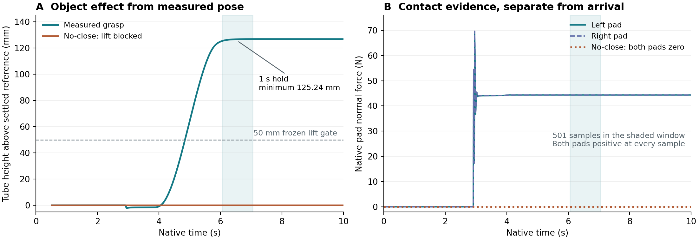
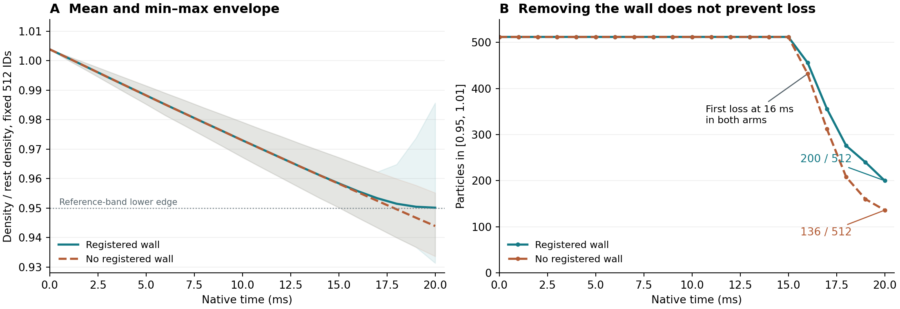

125.24 mm
Minimum lift during the verified hold
501 measured samples span 1 s. Both pads have positive normal force at every sample. The no-close branch stops at the grasp gate.
Actual trajectory and video →16 OCT 2026 · TWO ACTUAL CONTROLLED EXPERIMENTS
Full reproduction remains incomplete两篇工作继续同步推进：Auto 从空夹爪到仿真试管的原生接触抓取；MATTERIX 用有墙／无墙对照检验密度变化机制。结果进入共同的证据接口，联合世界中的完整任务仍待验证。
501 measured samples span 1 s. Both pads have positive normal force at every sample. The no-close branch stops at the grasp gate.
Actual trajectory and video →Both arms first lose full reference-band occupancy at 16 ms. Removing the boundary does not prevent the decline.
Matched initial state and control →01 / AUTO-ENGINEERING · CONTACT AND OBJECT EFFECT
The existing local UR5e / Robotiq scene now records actual actuator controls, joint state, end-effector pose and speed, tube pose and native contact forces at 500 Hz. Source gains, force limits and the previous arrival thresholds stay unchanged. No object attachment, teleport or external force is used.

| Actual branch | Observed outcome | Scope |
|---|---|---|
| Measured-contact pickup | Approach, grasp, lift and 1 s hold verified | One local positive fixture |
| No-close control | Grasp timeout at 3.776 s; no lift command | Task-dependency rejection, not the same lift without closure |
Both branches ran 5,000 steps and 10 s, without recorded unexpected contacts. The positive hold has minimum lift 125.2445 mm, bilateral contact fraction 1.0 and zero contact-loss samples. Before lift, the grasp gate requires positive normal force on both pads at every sample for at least 0.2 s; it does not establish absence of slip or uninterrupted contact between samples. The frozen requirement is ≥50 mm lift and ≥95% bilateral contact; actual observations are reported separately. This is one fixture, not a success-rate estimate or a complete pick–pour–place task.
Original GRID runtime, all four original harnesses, perception, liquid transfer, release, multi-seed evaluation and recovery remain open. No training admission or original Auto-Engineering full-reproduction claim.
02 / MATTERIX · MATCHED BOUNDARY INTERVENTION
Both arms start from the same 1,728 particles, ordered initial neighborhoods, mass, radius, gravity, kernel and solver settings. Only boundary registration changes. Before the no-wall arm runs, the new registered-wall control reproduces every field of the previous staged trajectory: 181 records × 1,728 particles × 36 fields, bit for bit.

| At 20 ms | Mean density ratio | In band | Minimum density ratio |
|---|---|---|---|
| Registered full80 wall | 0.950104 | 200 / 512 | 0.931309 |
| No registered wall | 0.943887 | 136 / 512 | 0.933598 |
The wall is not necessary for this density decline in this initialized fixture. It raises the terminal mean and retains 64 more particles in band, while the minimum is lower and the spread is wider. This does not establish that wall coupling is globally better or physically calibrated. Boundary fields first differ at 10 ms; the fixed cohort's fresh density first differs at 12 ms. Both arms first lose full band occupancy at 16 ms.
The earlier one-step algebra isolated initial pressure-driven relative expansion. This new native control shows that later loss can occur without boundary coupling; it does not prove the initial pressure increment is the sole cause of all later motion.
This is a local SPlisHSPlasH diagnostic, not the original paper's experimental volume or a density repair. Original physical-flow tests qualified: 0 / 8. No-wall contact checks are inapplicable, not successful wall-contact tests.